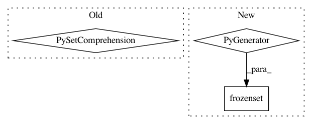

cd83fed56a184063215f932ef768f8834328654c,networkml/featurizers/funcs/host.py,HostBase,_tshark_all,#HostBase#Any#Any#,249
Before Change
df["_host_key"], df["_srcip"], df["_dstip"], df["_both_private_ip"], df["_ipv4_multicast"], df["_protos_int"] = zip(*df.apply(self._host_key, axis=1))
eth_srcs = set(df["eth.src"].unique())
eth_dsts = set(df["eth.dst"].unique())
all_unicast_macs = {mac for mac in eth_srcs.union(eth_dsts) if self._is_unicast(mac)}
host_keys = df["_host_key"].unique()
host_keys_count = len(host_keys)
print(".%u MACs, %u sessions" % (len(all_unicast_macs), host_keys_count), end="", flush=True)
if srcmacid:
After Change
df["_host_key"], df["_srcip"], df["_dstip"], df["_both_private_ip"], df["_ipv4_multicast"], df["_protos_int"] = zip(*df.apply(self._host_key, axis=1))
eth_srcs = frozenset(df["eth.src"].unique())
eth_dsts = frozenset(df["eth.dst"].unique())
all_unicast_macs = frozenset(mac for mac in eth_srcs.union(eth_dsts) if self._is_unicast(mac))
host_keys = df["_host_key"].unique()
host_keys_count = len(host_keys)
print(".%u MACs, %u sessions" % (len(all_unicast_macs), host_keys_count), end="", flush=True)
if srcmacid:
In pattern: SUPERPATTERN
Frequency: 3
Non-data size: 3
Instances
Project Name: CyberReboot/NetworkML
Commit Name: cd83fed56a184063215f932ef768f8834328654c
Time: 2020-04-01
Author: josh@vandervecken.com
File Name: networkml/featurizers/funcs/host.py
Class Name: HostBase
Method Name: _tshark_all
Project Name: pantsbuild/pants
Commit Name: a3cb9c08f86c193f76336284580ff302981388d7
Time: 2019-04-13
Author: john.sirois@gmail.com
File Name: build-support/bin/check_pants_pex_abi.py
Class Name:
Method Name: main
Project Name: CyberReboot/NetworkML
Commit Name: cd83fed56a184063215f932ef768f8834328654c
Time: 2020-04-01
Author: josh@vandervecken.com
File Name: networkml/featurizers/funcs/host.py
Class Name: HostBase
Method Name: _numericintset